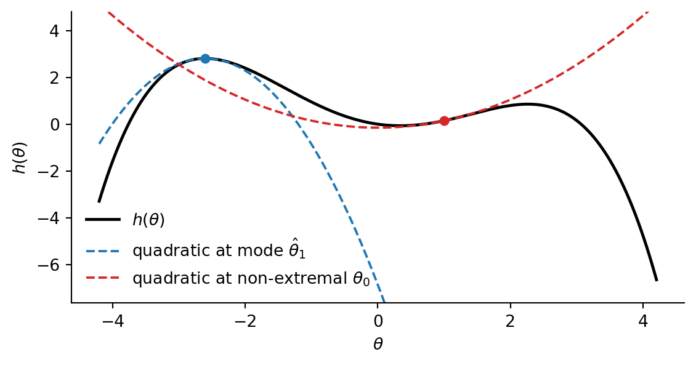
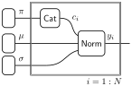
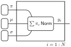
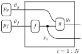
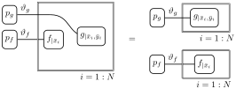
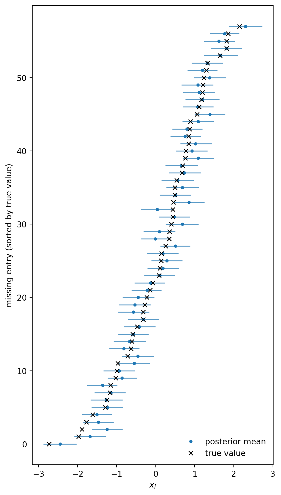
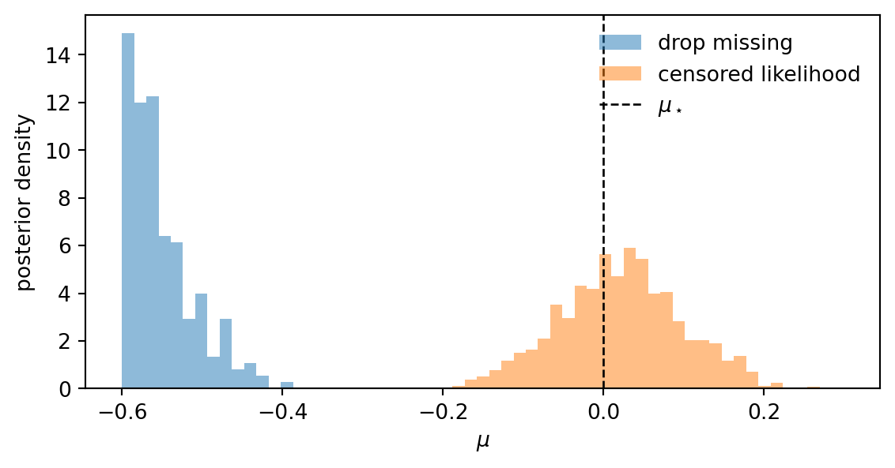

7 Inference in practice
\[ \def\then{\mathbin{;}} \def\kernel{\rightsquigarrow} \def\swap{\mathsf{swap}} \def\id{\mathsf{id}} \def\cp{\mathsf{copy}} \def\del{\mathsf{del}} \def\ivmark#1{[\![#1]\!]} \]
In this chapter, we discuss practical strategies for performing inference in complex models. This will leverage the strong conceptual foundation we have built up in the previous chapters, as well as the algebraic and graphical tools we have developed for reasoning about kernels.
7.1 Simplifying models
The first strategy we will discuss is simplifying the model by analytically manipulating its kernels. If it is possible to simplify some parts of the model analytically, we can do so before resorting to sampling or other approximation methods.
Most often, the kernels in a model will have densities. Recall from Section 4.1.5 that a kernel \(f : X \kernel Y\) has a density \(\ell_f(y \mid x)\) with respect to a base measure \(\nu_Y\) if \[f(B \mid x) = \int_B \ell_f(y \mid x) \, \nu_Y(dy)\] for all measurable \(B \subseteq Y\).
The most common case where kernels do not have densities is when they are deterministic. However, as we saw in Section 4.1.6, when \(f\) represents a deterministic function \(h : X \to Y\), we can simply plug in the output of \(h\) into \(g\) to get the density of the sequential composition \(f \then g\): \[ (f \then g)(C \mid x) = g(C \mid h(x)) = \int_C \ell_g(z \mid h(x)) \, \nu_Z(dz). \] Hence, we can eliminate the deterministic kernel \(f\) as long as its output is used later in the model.
Moreover, we saw that the following composition formulas hold for kernels with densities:
- Sequential composition. If \(f : X \kernel Y\) has density \(\ell_f(y \mid x)\) and \(g : Y \kernel Z\) has density \(\ell_g(z \mid y)\), then \(f \then g\) has density \[\ell_{f \then g}(z \mid x) = \int_Y \ell_g(z \mid y)\, \ell_f(y \mid x)\, \nu_Y(dy).\]
- Parallel composition. If \(f_1 : X_1 \kernel Y_1\) has density \(\ell_{f_1}(y_1 \mid x_1)\) and \(f_2 : X_2 \kernel Y_2\) has density \(\ell_{f_2}(y_2 \mid x_2)\), then \(f_1 \otimes f_2\) has density \[\ell_{f_1 \otimes f_2}(y_1, y_2 \mid x_1, x_2) = \ell_{f_1}(y_1 \mid x_1) \cdot \ell_{f_2}(y_2 \mid x_2).\]
- Copy-composition. If \(f : X \kernel Y\) has density \(\ell_f(y \mid x)\) and \(g : Y \kernel Z\) has density \(\ell_g(z \mid y)\), then \(f \odot g\) has density \[\ell_{f \odot g}(y, z \mid x) = \ell_f(y \mid x) \cdot \ell_g(z \mid y).\]
Note that both parallel and copy-composition simply correspond to multiplying densities functions. This is always tractable. In contrast, sequential composition involves an integral, which may be challenging to compute. Its difficulty depends on the specific forms of the densities and the base measure. However, in some cases, the integral can be computed analytically, allowing us to simplify the model before sampling.
First, when \(f\) is discrete, the integral reduces to a finite sum. Second, when \(f\) and \(g\) are conjugate distributions, the integral can be computed using known formulas. We discuss these two cases in more detail below.
7.1.1 Marginalizing discrete latents
When \(f\) is discrete, it has a density \(\ell_f(y \mid x)\) (with respect to counting measure) that assigns every input-output combination a non-negative weight. In the chapter on discrete kernels, we simply wrote \(f(y \mid x)\) for this weight.
In this case, the integral in the sequential composition formula reduces to a finite sum: \[ \ell_{f \then g}(z \mid x) = \sum_{y \in Y} \ell_g(z \mid y)\, \ell_f(y \mid x). \] In other words, the composed density is a weighted average of the densities \(\ell_g(z \mid y)\), where the weights are given by \(\ell_f(y \mid x)\).
Example 7.1 A Gaussian mixture model is a classic example where marginalizing discrete latents is useful. The idea is that each data point \(y_i\) belongs to one of \(K\) clusters. Given the cluster assignment \(c_i\) of a data point, its distribution is Gaussian with mean \(\mu_{c_i}\) and variance \(\sigma_{c_i}^2\). The cluster assignment \(c_i\) itself is drawn from a categorical distribution with probabilities \(\pi_1, \ldots, \pi_K\). Hence, the model can be written as \[ \begin{aligned} c_i &\sim \mathrm{Categorical}(\pi_1, \ldots, \pi_K) \\ y_i &\sim \mathrm{Normal}(\mu_{c_i}, \sigma_{c_i}^2). \end{aligned} \]
Usually, we want to learn the parameters \(\pi_c\), \(\mu_c\), and \(\sigma_c^2\) from data, in which case we choose suitable priors for them.
The string diagram for this model with priors is shown below, using plate notation:

Since the cluster assignment \(c_i\) is discrete, we can marginalize it out to get a simpler model for \(y_i\): \[ y_i \sim \sum_{c=1}^K \pi_c \cdot \mathrm{Normal}(\mu_c, \sigma_c^2). \]
This corresponds to sequentially composing the categorical kernel for \(c_i\) with the Gaussian kernel for \(y_i\) given \(c_i\). In the string diagram, this involves composing the two kernels in the plate:

Numpyro conveniently provides a MixtureSameFamily distribution that implements this marginalization for us, so we can directly write down the simplified model without explicitly introducing the discrete latent variable \(c_i\). Also see this tutorial on Gaussian mixture models in Numpyro for more details and code examples.
7.1.2 Conjugate distributions
The second case where the integral for sequential composition can be computed analytically is when the densities \(\ell_f\) and \(\ell_g\) have a compatible form known as conjugacy. In this case, the integral can be computed using known formulas, allowing us to simplify the model before sampling.
We provide two useful examples of conjugate distributions and their corresponding formulas for sequential composition. A more comprehensive list can be found on Wikipedia’s page on conjugate priors. Although we won’t cover it here, it is important to know that Gaussian distributions have strong conjugacy properties, which allow us to analytically marginalize out Gaussian latents in many cases.
Example 7.2 (Beta-Bernoulli)
Suppose your model contains the following sequential composition of kernels: \[ \begin{aligned} p &\sim \mathrm{Beta}(\alpha, \beta) \\ y_i &\sim \mathrm{Bernoulli}(p), \quad i = 1, \ldots, n, \end{aligned} \] where the \(y_i\) are conditionally independent given \(p\). In other words, we are drawing \(n\) iid Bernoulli trials with success probability \(p\), where \(p\) itself is drawn from a beta distribution.
The density of the beta distribution is given by \[ \ell_{\mathrm{Beta}}(p) = \frac{p^{\alpha - 1} (1 - p)^{\beta - 1}}{B(\alpha, \beta)}, \] where \(\alpha\) and \(\beta\) are positive shape parameters, and \(B(\alpha, \beta) := \int_0^1 t^{\alpha - 1} (1 - t)^{\beta - 1} \, dt\) is the beta function.
The joint density of the \(n\) Bernoulli observations given \(p\) is \[ \ell_{\mathrm{Bernoulli}}(y_1, \ldots, y_n \mid p) = \prod_{i=1}^n p^{y_i} (1 - p)^{1 - y_i} = p^s (1 - p)^{n - s}, \] where \(s := \sum_{i=1}^n y_i\) is the number of observed successes.
Observe that viewed as a function of \(p\), this likelihood has the same form as the beta density, with parameters \(\alpha' = s + 1\) and \(\beta' = n - s + 1\). This is called conjugacy. Because of this, when we sequentially compose the prior with the likelihood, the densities can be combined as follows: \[ \begin{aligned} \ell_{f \then g}(y_1, \ldots, y_n) &= \int_0^1 \ell_{\mathrm{Bernoulli}}(y_1, \ldots, y_n \mid p) \, \ell_{\mathrm{Beta}}(p) \, dp \\ &= \int_0^1 p^s (1 - p)^{n - s} \cdot \frac{p^{\alpha - 1} (1 - p)^{\beta - 1}}{B(\alpha, \beta)} \, dp \\ &= \frac{1}{B(\alpha, \beta)} \int_0^1 p^{\alpha + s - 1} (1 - p)^{\beta + n - s - 1} \, dp \\ &= \frac{B(\alpha + s, \beta + n - s)}{B(\alpha, \beta)}. \end{aligned} \]
Hence we have found a closed-form expression for the marginal density of the observations, allowing us to simplify the model before sampling. In particular, we can directly write down the marginal distribution of \(y_{1:n}\) without explicitly introducing the latent variable \(p\).
This explicit expression for the marginal density also allows us to compute the posterior distribution of \(p\) given the observations in closed form using Bayes’ rule: \[ \begin{aligned} \ell(p \mid y_{1:n}) &= \frac{\ell_{\mathrm{Bernoulli}}(y_{1:n} \mid p) \, \ell_{\mathrm{Beta}}(p)}{\ell_{f \then g}(y_{1:n})} \\ &= \frac{p^s (1 - p)^{n - s} \cdot \frac{p^{\alpha - 1} (1 - p)^{\beta - 1}}{B(\alpha, \beta)}}{\frac{B(\alpha + s, \beta + n - s)}{B(\alpha, \beta)}} \\ &= \frac{p^{\alpha + s - 1} (1 - p)^{\beta + n - s - 1}}{B(\alpha + s, \beta + n - s)} \\ &= \ell_{\mathrm{Beta}}(p \mid \alpha + s, \beta + n - s). \end{aligned} \]
Hence, the posterior distribution of \(p\) given \(y_{1:n}\) is also a beta distribution, with updated parameters \(\alpha' = \alpha + s\) and \(\beta' = \beta + n - s\).
A quicker way to see this is to directly consider the joint density of \(p\) and \(y_{1:n}\), which is obtained by copy-composing the two kernels: \[ \begin{aligned} \ell(p, y_{1:n}) &= \ell_{\mathrm{Bernoulli}}(y_{1:n} \mid p) \cdot \ell_{\mathrm{Beta}}(p) \\ &= p^s (1 - p)^{n - s} \cdot \frac{p^{\alpha - 1} (1 - p)^{\beta - 1}}{B(\alpha, \beta)} \\ &= \frac{p^{\alpha + s - 1} (1 - p)^{\beta + n - s - 1}}{B(\alpha, \beta)}. \end{aligned} \]
Viewing this as a function of \(p\) for fixed \(y_{1:n}\), we see that up to normalization it has the same form as the beta density, with parameters \(\alpha' = \alpha + s\) and \(\beta' = \beta + n - s\). Normalizing this function of \(p\) yields the posterior beta density.
Note that the update rule \(\alpha' = \alpha + s\) adds the observed successes to \(\alpha\) and \(\beta' = \beta + n - s\) adds the observed failures to \(\beta\). This allows us to interpret \(\alpha\) and \(\beta\) as “pseudo-counts” of successes and failures, respectively, that we observed before seeing any new data. Notice also that the posterior depends on the data only through the sufficient statistics \((s, n)\), not on the individual \(y_i\).
Example 7.3 (Dirichlet-Categorical)
A similar form of conjugacy holds between the Dirichlet distribution and the categorical distribution. The Dirichlet distribution is a multivariate generalization of the beta distribution, and the categorical distribution is a multivariate generalization of the Bernoulli distribution.
Suppose your model contains the following sequential composition of kernels: \[ \begin{aligned} \pi &\sim \mathrm{Dirichlet}(\alpha_1, \ldots, \alpha_K) \\ y_i &\sim \mathrm{Categorical}(\pi_1, \ldots, \pi_K), \quad i = 1, \ldots, n, \end{aligned} \] where the \(y_i\) are conditionally independent given \(\pi\).
The density of the Dirichlet distribution is given by \[ \ell_{\mathrm{Dirichlet}}(\pi) = \frac{\prod_{k=1}^K \pi_k^{\alpha_k - 1}}{B(\alpha_1, \ldots, \alpha_K)}, \] where \(\alpha_1, \ldots, \alpha_K\) are positive shape parameters, and \(B(\alpha_1, \ldots, \alpha_K)\) is the multivariate beta function.
The joint density of the \(n\) categorical observations given \(\pi\) is \[ \ell_{\mathrm{Categorical}}(y_1, \ldots, y_n \mid \pi) = \prod_{i=1}^n \prod_{k=1}^K \pi_k^{\ivmark{y_i = k}} = \prod_{k=1}^K \pi_k^{n_k}, \] where \(n_k := \sum_{i=1}^n \ivmark{y_i = k}\) is the count of observations in category \(k\), and \(\sum_k n_k = n\).
By a similar calculation as in the beta-Bernoulli case, the marginal density of the observations is \[ \ell_{f \then g}(y_{1:n}) = \frac{B(\alpha_1 + n_1, \ldots, \alpha_K + n_K)}{B(\alpha_1, \ldots, \alpha_K)}, \] and the posterior distribution of \(\pi\) given the observations is again a Dirichlet distribution, with updated parameters \(\alpha_k' = \alpha_k + n_k\) for each \(k\).
Hence the prior parameters \(\alpha_k\) act as pseudo-counts that are simply augmented by the observed counts \(n_k\). As in the beta-Bernoulli case, the posterior depends on the data only through the sufficient statistics \((n_1, \ldots, n_K)\).
This example is particularly important in practice, since it allows us to fit any discrete kernel to data using a simple formula, provided we use a Dirichlet prior. Concretely, suppose we have a discrete kernel \(f : X \kernel Y\) whose entries \(f(y \mid x)\) are unknown. For each \(x \in X\), we can treat the entries \(f(y \mid x)\) as a categorical distribution over \(y \in Y\), and put a Dirichlet prior on it. Then, given data of the form \((x_i, y_i)\), we can directly compute the posterior distribution of \(f(y \mid x)\) for each \(x\) using the Dirichlet-Categorical conjugacy.
Explicitly, if we have observed \(n_{x,y}\) pairs of \((x, y)\) in the data, then the posterior distribution of \(f(y \mid x)\) is a Dirichlet distribution with parameters \(\alpha_{x,y}' = \alpha_{x,y} + n_{x,y}\), where \(\alpha_{x,y}\) are the parameters of the prior Dirichlet distribution. Note that this corresponds to simply adding the observed counts \(n_{x,y}\) to the prior pseudo-counts \(\alpha_{x,y}\) for each entry of the kernel. Using pseudo-counts of 1 corresponds precisely to the Laplace smoothing technique we encountered in Exercise 3.
While choosing the kernels in a model to be conjugate can allow us to simplify the model before sampling, it is not always possible or desirable to do so. In particular, conjugacy forces the kernels to have a specific form, which may not be flexible enough to capture the true data-generating process.
7.2 Approximating parts of the model
When a kernel in our model is too complex to handle exactly, we can replace it by a simpler approximation. The idea is to swap one box in the diagram for another that is easier to work with, while keeping the rest of the model intact. We discuss two such approximations: replacing a kernel by a deterministic kernel concentrated at its mode (MAP), and replacing it by a Gaussian centered at the mode (Laplace).
7.2.1 MAP estimates
The most drastic simplification of a kernel is to replace it by a deterministic kernel that always outputs a single value. Given a kernel \(f : X \kernel Y\) with density \(\ell_f(y \mid x)\), the natural choice is the most likely output for each input.
Definition 7.4 (MAP approximation) The MAP approximation of a kernel \(f : X \kernel Y\) with density \(\ell_f(y \mid x)\) is the deterministic kernel \(\hat f : X \kernel Y\) defined by \[ \hat f(y \mid x) := \ivmark{y = \hat y(x)}, \qquad \hat y(x) := \arg\max_{y \in Y} \ell_f(y \mid x). \]
The value \(\hat y(x)\) is called the maximum a posteriori (MAP) estimate of \(y\) given \(x\).
We can substitute \(\hat f\) for \(f\) anywhere in the diagram. In principle, this works for any kernel, but it discards all uncertainty about \(y\). Information that downstream computations would have extracted from the spread of \(f(- \mid x)\) will be lost.
Applying MAP to a posterior. The most common use of this idea is to approximate the posterior of an unobserved variable \(\theta\) given data \(y\). Recall that the joint density obtained by copy-composing the prior and the likelihood is \[ \ell(\theta, y) = \ell_{\text{likelihood}}(y \mid \theta) \, \ell_{\text{prior}}(\theta), \] and the posterior is proportional to this in \(\theta\): \[ \ell(\theta \mid y) = \frac{\ell(\theta, y)}{\ell(y)} \propto \ell(\theta, y). \] The denominator \(\ell(y)\) does not depend on \(\theta\), so it has no effect on the location of the maximum. Moreover, we prefer to optimize the log-density instead since it is numerically more stable and turns products into sums. This is justified since taking logarithms is order-preserving and hence does not change the location of the maximum.
The MAP estimate of \(\theta\) given \(y\) is therefore \[ \hat\theta(y) = \arg\max_{\theta} \ell(\theta, y) = \arg\max_{\theta} \big[\, \log \ell_{\text{likelihood}}(y \mid \theta) + \log \ell_{\text{prior}}(\theta) \,\big]. \] Hence, we have replaced an intractable normalization (a high-dimensional integral) by an optimization problem.
Maximum likelihood. Notice that when the prior is constant (does not depend on \(\theta\)), the MAP estimate reduces to the maximum likelihood estimate (MLE): \[ \hat\theta_{\text{MLE}} = \arg\max_\theta \ell_{\text{likelihood}}(y \mid \theta). \]
The maximum likelihood estimator is frequently used in non-Bayesian settings and has very nice properties. However, it can be unstable when the likelihood is flat or has multiple modes. Moreover it does not allow us to incorporate prior knowledge about \(\theta\). The MAP estimator can thus be viewed as a regularized version of the MLE, where the type of regularization is determined by the prior.
When is MAP a good approximation? Replacing the posterior by the MAP estimate is reasonable when the posterior is concentrated around a single mode, that is, when we expect \(\theta \mid y\) to be nearly deterministic. This typically happens when there is enough data to pin down \(\theta\) precisely. For posteriors with broad or multimodal distributions, MAP can be badly misleading: it ignores the spread, picks an arbitrary mode, and may even land at a point of low typical mass in high dimensions.
Example 7.5 (Ridge regression as MAP)
Consider Bayesian linear regression with Gaussian prior on the coefficients and Gaussian noise on the observations: \[ \begin{aligned} \beta &\sim \mathrm{MvNormal}(0, \tau^2 I_d) \\ y_i &\sim \mathrm{Normal}(x_i^\top \beta, \sigma^2), \quad i = 1, \ldots, n, \end{aligned} \]
where \(x_i \in \mathbb{R}^d\) are fixed covariates.
The joint log-density of \(\beta\) and \(y_{1:n}\) is \[ \log \ell(\beta, y_{1:n}) = -\frac{1}{2\sigma^2} \sum_{i=1}^n (y_i - x_i^\top \beta)^2 - \frac{1}{2\tau^2} \|\beta\|^2 + \text{const}. \] Maximizing this over \(\beta\) is equivalent to minimizing \[ \sum_{i=1}^n (y_i - x_i^\top \beta)^2 + \lambda \|\beta\|^2, \qquad \lambda := \frac{\sigma^2}{\tau^2}, \] which is exactly the ridge regression objective. Hence the ridge estimator is the MAP estimate of \(\beta\) under a Gaussian prior, and the prior variance \(\tau^2\) controls the regularization strength \(\lambda\). Replacing the posterior kernel \(\beta \mid y_{1:n}\) by the MAP estimate gives a deterministic plug-in for downstream prediction, at the cost of ignoring posterior uncertainty about \(\beta\).
7.2.2 Laplace approximation
The MAP estimate captures the most likely value of \(\theta\) but throws away all information about uncertainty. The Laplace approximation is a refinement that keeps some of this information by replacing the target kernel with a Gaussian centered at the MAP, rather than a point mass.
Taylor expansion. Recall that a smooth function \(h : \mathbb{R}^d \to \mathbb{R}\) can be approximated near a point \(\hat\theta\) by its second-order Taylor expansion: \[ h(\theta) \approx h(\hat\theta) + \nabla h(\hat\theta)^\top (\theta - \hat\theta) + \tfrac{1}{2} (\theta - \hat\theta)^\top \nabla^2 h(\hat\theta) \, (\theta - \hat\theta), \] where \(\nabla h\) is the gradient (matrix of first derivatives) and \(\nabla^2 h\) is the Hessian (matrix of second derivatives). When \(\hat \theta\) is a local maximum, the gradient vanishes, so applying the Taylor expansion there yields a quadratic approximation of the form \[ h(\theta) \approx h(\hat\theta) - \tfrac{1}{2} (\theta - \hat\theta)^\top \nabla^2 h(\hat\theta) \, (\theta - \hat\theta). \]
Approximating the log-density. We apply this to the log-density of a kernel \(f : X \kernel Y\). Let \(\hat y(x) := \arg\max_y \log \ell_f(y \mid x)\) be the mode and write \(H(x) := -\nabla^2_y \log \ell_f(y \mid x) \big|_{y = \hat y(x)}\) for the negative Hessian at the mode, which is positive definite for a true local maximum. Exponentiating the quadratic expansion of \(\log \ell_f\) at \(\hat y(x)\) gives an unnormalized Gaussian in \(y\) with mean \(\hat y(x)\) and covariance \(H(x)^{-1}\): \[ \ell_f(y \mid x) \approx \ell_f(\hat y(x) \mid x) \cdot \exp\!\Big( -\tfrac{1}{2} (y - \hat y(x))^\top H(x) \, (y - \hat y(x)) \Big). \]
Normalizing in \(y\) gives the Laplace approximation of \(f\), which we can substitute for \(f\) in the diagram.
Definition 7.6 (Laplace approximation) Let \(f : X \kernel Y\) be a kernel with density \(\ell_f(y \mid x)\) that is smooth in \(y\) and has a unique maximum \(\hat y(x) := \arg\max_{y} \ell_f(y \mid x)\) for each \(x\). The Laplace approximation of \(f\) is the Gaussian kernel \[ \hat f(- \mid x) := \mathrm{MvNormal}\big( \hat y(x), \, H(x)^{-1} \big), \]
where \(H(x) := -\nabla^2_y \log \ell_f(y \mid x) \big|_{y = \hat y(x)}\) is the negative Hessian of the log-density at the mode.
Connection to MAP. The Laplace approximation can be seen as a refinement of the MAP estimate: both use the mode \(\hat y(x)\), but Laplace additionally captures local curvature via \(H(x)^{-1}\). In the limit \(H(x) \to \infty\) (an arbitrarily sharp peak), the Gaussian collapses to the MAP approximation. The Laplace approximation is useful when \(f(- \mid x)\) is unimodal and roughly bell-shaped, but is misleading for multimodal or heavy-tailed targets.
When is Laplace practical? The approximation requires finding the mode \(\hat y(x)\) and computing the Hessian \(H(x)\) for each input \(x\). If we are approximating a distribution in this way (no inputs), then these can be computed once by optimization and differentiation. When there are many inputs, the Laplace approximation is only appealing if the mode and Hessian can be computed in closed form, or at least efficiently.
7.2.3 Variational approximations
More generally, we can replace a kernel by any other kernel that is easier to work with. The MAP and Laplace approximations are just two examples of this idea. Suppose we want to approximate a kernel \(f : X \kernel Y\) by a kernel \(\hat f : X \kernel Y\). One way to do this is specify a parametric family of kernels \(\{\hat f_\lambda : \lambda \in \Lambda\}\) and find the best approximation of \(f\) within this family. This can done by minimizing some measure \(D\) of similarity between \(f\) and \(\hat f_\lambda\) over \(\lambda \in \Lambda\):
\[ \hat f = \arg\min_{\lambda \in \Lambda} D(f, \hat f_\lambda) \]
A common choice of similarity measure is the Kullback–Leibler (KL) divergence. When both kernels have densities with respect to the same base measure \(\nu\), the KL divergence from \(f\) to \(g\) is defined by \[ \mathrm{KL}(f \parallel g) := \sup_x \int_Y \ell_f(y \mid x) \log \frac{\ell_f(y \mid x)}{\ell_g(y \mid x)} \, \nu(dy). \] The KL divergence between probability kernels is non-negative and equals zero if and only if \(f\) and \(g\) are equal. However, it is not symmetric and does not satisfy the triangle inequality, so it is not a true distance metric. Minimizing KL divergence is the basis of variational inference, a powerful technique for approximating complex distributions by simpler ones.
Another common choice is the total variation distance, which measures the largest difference in probabilities assigned to events by two distributions. It can also be computed in terms of densities: \[ \mathrm{TV}(f, g) := \sup_x \sup_{B \in \Sigma_Y} |f(B \mid x) - g(B \mid x)| = \sup_x \frac{1}{2} \int_Y |\ell_f(y \mid x) - \ell_g(y \mid x)| \, \nu(dy). \]
7.3 Exploiting model structure
Suppose that our model consists of two non-interacting parts, that is, it can be written as a parallel composition of two sub-models. In this case, we can perform inference separately on each part and combine the results. This is often much more efficient than performing inference on the whole model at once. Often, such a decomposition arises after we condition on observations which removes the wires corresponding to those variables. Even if the model does not decompose natively into two parts, there are techniques to force such a decomposition by approximating some variables by point estimates.
7.3.1 Conditioning splits models
Consider the following simple model: \[ \begin{aligned} \vartheta_f &\sim p_f \\ \vartheta_g &\sim p_g \\ x_i &\sim f(- \mid \vartheta_f), \quad i = 1, \ldots, N \\ y_i &\sim g(- \mid x_i, \vartheta_g), \quad i = 1, \ldots, N \end{aligned} \]
In string diagrams:

The model consists of \(N\) independent sequential compositions of \(f\) and \(g\), where the parameters \(\vartheta_f\) and \(\vartheta_g\) are shared across all compositions. We will assume that both \(f\) and \(g\) have densities \(\ell_f\) and \(\ell_g\), respectively.
Suppose that we observe \(\bar x_{1:N}\) and \(\bar y_{1:N}\). Then we can condition on these observations to get the posterior distribution of \(\vartheta_f\) and \(\vartheta_g\) given the data. Recall that conditioning on a variable removes all wires carrying that variable, and substitutes the observed value into the densities of all affected kernels. Graphically, this produces the following string diagram,

where \(f_{\mid \bar x_i}\) has density \(\ell_f(\bar x_i \mid \vartheta_f)\) and \(g_{\mid \bar y_i}\) has density \(\ell_g(\bar y_i \mid \bar x_i, \vartheta_g)\). Since the preconditioned kernels have trivial output space \(I = \{*\}\), the densities are with respect to the probability measure on \(I\) that assigns mass 1 to the single element. In other words, they are just weights.
Notice that the resulting diagram decomposes into two parallel parts, one containing \(\vartheta_f\) and the other containing \(\vartheta_g\). Hence, we can perform inference separately on each part to get the marginal posteriors of \(\vartheta_f\) and \(\vartheta_g\) given the data. This is much more efficient than performing inference on the whole model at once. This strategy generalizes whenever we can fully observe intermediate variables.
7.3.2 Empirical Bayes
Often, however, the values of the latent variables are hidden. However, if we knew their values, we could condition on them to split the model into two parts. The idea of empirical Bayes is to first find a point estimate of the latent variables, and then condition on this estimate to split the model.
Consider the following model: \[ \begin{aligned} \vartheta &\sim p \\ \tau_i &\sim q \\ y_i &\sim f(- \mid \vartheta, \tau_i), \quad i = 1, \ldots, N \end{aligned} \]
In string diagrams:
Suppose we observe \(\bar y_{1:N}\). Notice that the wire carrying \(\vartheta\) is the only thing holding the slices of the plate together. Hence, if we were given the value of \(\vartheta\), we could condition on it to split the model into \(N\) independent parts. We could then independently infer each \(\tau_i\).
Although we don’t know the value of \(\vartheta\), we can find a point estimate \(\hat\vartheta\) using maximization. Concretely, the joint density over all variables in the preconditioned model is given by \[ \ell(\vartheta, \tau_{1:N}) = \ell_p(\vartheta) \cdot \prod_{i=1}^N \ell_q(\tau_i) \cdot \ell_f(\bar y_i \mid \vartheta, \tau_i). \]
We can find the joint MAP estimate \((\hat \vartheta, \hat \tau_{1:N})\) by maximizing the log of this density over \(\vartheta\) and \(\tau_{1:N}\). We can then select \(\hat \vartheta\) as our point estimate for \(\vartheta\) and condition on it. Note that we have used the first component of the joint MAP estimate, rather than the marginal MAP estimate \(\hat \vartheta_{\text{marginal}} := \arg\max_\vartheta \int \ell(\vartheta, \tau_{1:N}) \, d\tau_{1:N}\). These two values are not the same. While the latter is more conceptually appealing, it is typically much harder to compute.
Using the MAP is not required. In principle any suitable point estimate of \(\vartheta\) can be used to split the model. Often classical statistics provide simple estimators that can be used for this purpose.
7.4 Data realities
7.4.1 Censored and binned data
In many applications, the variable we would like to observe is not directly accessible. Instead, we see a deterministic function of it: a survival time may be cut off at the end of a study, an age may be reported only as the interval \([a, b)\) that contains it, or a sensor may saturate above some threshold. Conceptually, this is no problem. We simply append a deterministic kernel encoding the observation mechanism to the generating process and condition on its output.
Example 7.7 (Interval-censored ages)
Suppose that we have a model \(m : \Theta \kernel \mathbb{R}_{\ge 0}\) for age with density \(\ell_m(a \mid \vartheta)\) with respect to a Lebesgue measure. However, our data report only the age bracket \([a_k, a_{k+1})\), for a fixed partition \(0 = a_0 < a_1 < \cdots < a_K = \infty\). The observation mechanism is the deterministic binning kernel \(b : \mathbb{R}_{\ge 0} \to \{0, \ldots, K-1\}\) that sends an age \(a\) to the age bracket containing it. Its output space is discrete, so it has density \(\ell_b(k \mid a) = \ivmark{a \in [a_k, a_{k+1})}\). Hence, we can simply work with the composed model \(m \then b\) and condition on the observed bins \(\bar k_{1:N}\) to get the posterior of \(\vartheta\) given the data.
Alternatively, it is possible to directly compute the density of the composed kernel \(m \then b\): \[ \ell_{m \then b}(k \mid \vartheta) = \int_0^\infty \ivmark{a \in [a_k, a_{k+1})} \, \ell_m(a \mid \vartheta) \, da = \Pr(A \in [a_k, a_{k+1}) \mid \vartheta). \]
For the special case of intervals this can be computed as the difference of CDF values: \[ \ell_{m \then b}(k \mid \vartheta) = F(a_{k+1} \mid \vartheta) - F(a_k \mid \vartheta), \] where \(F(a \mid \vartheta) := \int_0^a \ell_m(t \mid \vartheta) \, dt\) is the CDF of \(m\).
Conditioning on the observed bins \(\bar k_{1:N}\) yields the interval-censored likelihood: \[ \prod_{i=1}^N \big( F(a_{\bar k_i + 1} \mid \vartheta) - F(a_{\bar k_i} \mid \vartheta) \big), \] which depends on \(\vartheta\) only through the CDF \(F\).
In many cases, however, censoring can break the usual density-based workflow. Since the appended kernel is deterministic, it generally does not have a density when the output space is infinite. Hence, we cannot simply read off the likelihood of the observation by plugging into a density formula. In such a case, we must compute the composite with the deterministic kernel before conditioning on the observed data.
7.4.2 Missing data
In real datasets, some entries of an observation are often missing. The clean way to handle this in our framework is to condition only on the variables that were actually observed, and treat the missing entries as latent variables along with the rest of the model’s unknowns. From the string-diagram point of view, we simply do not feed any observed value into the wires corresponding to missing entries; they remain free outputs of the model.
Non-informative missingness. This is correct whenever the fact that a value is missing carries no information about the latent quantities, for instance when each entry is independently dropped with a probability that does not depend on its value or on any unobserved parameter. In that case, conditioning on the observed entries alone gives the right posterior.
Informative missingness. Sometimes whether a value is missing depends on what the value would have been, or on a latent variable we care about. Suppose, for example, that a sensor reports a measurement \(y\) only when \(y\) does not exceed some threshold \(c\). Then the observation mechanism is the deterministic kernel \[ y \;\mapsto\; (m, y^{\text{obs}}) := \big( \ivmark{y > c}, \; y \cdot \ivmark{y \le c} \big), \] where \(m \in \{0, 1\}\) is the missingness indicator. Seeing \(m = 1\) (missing) is informative: it tells us that \(y > c\). Discarding those data points and conditioning only on the non-missing entries effectively conditions on \(y \le c\) without telling the model, biasing inference about the parameters of \(y\)’s distribution.
The fix is to compose the model with the missingness kernel above and condition on the observed pair \((m_i, y_i^{\text{obs}})\) for each \(i\), exactly as in the censoring examples. The likelihood contribution from a missing observation is then \(\Pr(y > c \mid \vartheta)\), not zero, so the pattern of missingness actively informs the parameter estimates.
Imputation. In either case, since we treat missing values as unknown latent variables, they are automatically imputed when we sample from the posterior. Like any other posterior quantity, the imputed values have a distribution that reflects our uncertainty about them. Such imputed values are often useful for downstream tasks.
Example 7.8 (Imputing missing covariates in linear regression) We illustrate imputation in a simple linear regression. The data-generating process is \[ \begin{aligned} x_i &\sim \mathrm{Normal}(\mu_x, \sigma_x^2), \\ y_i &\sim \mathrm{Normal}(a + b\, x_i, \sigma^2), \quad i = 1, \ldots, n, \end{aligned} \] and we observe all \(y_i\), but a random subset of the covariates \(x_i\) is missing completely at random. The missingness is non-informative, but throwing away those rows is wasteful: even when \(x_i\) is unknown, the corresponding \(y_i\) still carries information about the regression coefficients through the marginal distribution of \(y\).
We start by simulating the data and randomly dropping some of the covariates. The observed dataset x_obs contains the true value of \(x_i\) when it is observed and NaN when it is missing.
import jax.numpy as jnp
from jax import random
import numpyro
import numpyro.distributions as dist
from numpyro.infer import MCMC, NUTS
a_true, b_true, sigma = 1.0, 2.0, 0.5
mu_x_true, sigma_x_true = 0.0, 1.0
n, p_missing = 200, 0.3
key_x, key_y, key_m, key_mcmc = random.split(random.PRNGKey(0), 4)
x_full = mu_x_true + sigma_x_true * random.normal(key_x, (n,))
y = a_true + b_true * x_full + sigma * random.normal(key_y, (n,))
missing = random.uniform(key_m, (n,)) < p_missing
x_obs = jnp.where(missing, jnp.nan, x_full)
n_miss = int(missing.sum())
print(f"observed covariates: {n - n_miss}, missing: {n_miss}")observed covariates: 142, missing: 58Our model is based on the usual regression likelihood, y ~ Normal(a + b*x, sigma). Since some of the \(x_i\) are missing, we need a generative model x ~ Normal(mu_x, sigma_x) over all covariates so that we can sample the missing values. For this we put priors on mu_x and sigma_x. As a consequence, the model now explicitly infers the covariate distribution from the observed \(x_i\) and \(y_i\).
If an \(x_i\) is missing we want to generate it from the prior using a sampling statement; if it is observed, we want to condition on its value. To avoid the case distinction, we sample a full-length latent vector x_imp from the prior using .mask(False), which removes its contribution to the joint log-density. We then build the covariate vector x by picking the imputed value at the missing positions and the observed value elsewhere, and treat that vector as a normal observation. The mask(False) ensures the imputed values are scored only once, through the x_obs likelihood site.
def model(x_obs, missing, y):
# Regression coefficients.
a = numpyro.sample("a", dist.Normal(0.0, 10.0))
b = numpyro.sample("b", dist.Normal(0.0, 10.0))
# Covariate distribution.
mu_x = numpyro.sample("mu_x", dist.Normal(0.0, 10.0))
sigma_x = numpyro.sample("sigma_x", dist.HalfNormal(5.0))
# Latent values for every entry; mask(False) drops their prior log-prob
# from the joint, since x_obs below scores the full vector x.
x_imp = numpyro.sample(
"x_imp",
dist.Normal(mu_x, sigma_x).expand([n]).mask(False),
)
# Fill in imputed values where x is missing, observed values otherwise.
x = jnp.where(missing, x_imp, x_obs)
# Marginal model for the covariates and regression likelihood for the responses.
numpyro.sample("x_obs", dist.Normal(mu_x, sigma_x), obs=x)
numpyro.sample("y_obs", dist.Normal(a + b * x, sigma), obs=y)
mcmc = MCMC(NUTS(model), num_warmup=500, num_samples=1000, progress_bar=False)
mcmc.run(key_mcmc, x_obs=x_obs, missing=missing, y=y)
posterior = mcmc.get_samples()Because each x_imp[i] at a missing position is a latent variable inside the regression, its posterior is informed by both the marginal \(x\)-model and the corresponding \(y_i\). The posterior mean of x_imp should therefore be close to the true (hidden) covariates, and the regression coefficients should match a_true, b_true.
print(f"posterior mean a: {posterior['a'].mean():.3f} (true: {a_true})")
print(f"posterior mean b: {posterior['b'].mean():.3f} (true: {b_true})")posterior mean a: 0.911 (true: 1.0)
posterior mean b: 2.000 (true: 2.0)To visualize the imputed covariates, we restrict x_imp to the missing positions and make a forest plot of the posterior intervals with the hidden true values overlaid.
Code
import matplotlib.pyplot as plt
x_imp_missing = posterior["x_imp"][:, missing]
x_true_missing = x_full[missing]
order = jnp.argsort(x_true_missing)
lo, hi = jnp.percentile(x_imp_missing[:, order], jnp.array([5.0, 95.0]), axis=0)
mean = x_imp_missing[:, order].mean(axis=0)
truth = x_true_missing[order]
rows = jnp.arange(n_miss)
fig, ax = plt.subplots(figsize=(5, max(3.0, 0.15 * n_miss)))
ax.hlines(rows, lo, hi, color="C0", lw=1.2, alpha=0.7)
ax.plot(mean, rows, "o", color="C0", ms=3, label="posterior mean")
ax.plot(truth, rows, "x", color="k", ms=5, label="true value")
ax.set_xlabel(r"$x_i$")
ax.set_ylabel("missing entry (sorted by true value)")
ax.legend(frameon=False, loc="lower right")
fig.tight_layout()
plt.show()
The imputed covariates track the hidden truth well. Note that this is vastly superior to simply imputing the missing entries by the empirical mean of the observed ones or some other method that is only informed by the marginal distribution of \(x\) and ignores the regression structure.
Example 7.9 (Missingness in a Gaussian measurement model)
To illustrate how to handle missing data that is informative about the value, consider a textbook measurement model: we want to infer the mean \(\mu\) of a Gaussian from \(n\) noisy measurements \(y_i \sim \mathrm{Normal}(\mu, \sigma^2)\) with \(\sigma\) known. The sensor saturates: any measurement above a known threshold \(c\) comes back as NaN. We compare two models: a naive one that drops the missing entries, and a censored likelihood that accounts for the missingness mechanism.
We first simulate data with \(\mu_\star = 0\), \(\sigma = 1\), \(c = 0.5\), and \(n = 200\). About a third of the measurements get censored to NaN, and the empirical mean of the observed entries sits well below \(\mu_\star\).
import jax.numpy as jnp
from jax import random
import numpyro
import numpyro.distributions as dist
from numpyro.infer import MCMC, NUTS
mu_true, sigma, c, n = 0.0, 1.0, 0.5, 200
key_data, key_naive, key_cens = random.split(random.PRNGKey(0), 3)
y_true = mu_true + sigma * random.normal(key_data, (n,))
missing = y_true > c
y_obs = y_true[~missing]
n_missing = int(missing.sum())
print(f"observed: {n - n_missing}, missing: {n_missing}")
print(f"empirical mean of observed entries: {y_obs.mean():.3f}")observed: 126, missing: 74
empirical mean of observed entries: -0.655The naive model fits a Gaussian likelihood to the observed entries only and ignores the existence of the missing ones.
def model_naive(y):
mu = numpyro.sample("mu", dist.Normal(0.0, 10.0))
numpyro.sample("y", dist.Normal(mu, sigma), obs=y)
mcmc_naive = MCMC(NUTS(model_naive), num_warmup=500, num_samples=1000, progress_bar=False)
mcmc_naive.run(key_naive, y=y_obs)
mu_naive = mcmc_naive.get_samples()["mu"]The censored model adds a likelihood contribution \(\Pr(y > c \mid \mu) = 1 - \Phi((c - \mu)/\sigma)\) for each missing entry, on top of the Gaussian likelihood for the observed ones. In NumPyro, such custom log-likelihood contributions can be added using numpyro.factor, which adds an arbitrary term to the joint log-density.
import jax.scipy.stats as jstats
def model_censored(y, n_missing):
mu = numpyro.sample("mu", dist.Normal(0.0, 10.0))
numpyro.sample("y", dist.Normal(mu, sigma), obs=y)
log_surv = jstats.norm.logsf(c, loc=mu, scale=sigma)
numpyro.factor("missing", n_missing * log_surv)
mcmc_cens = MCMC(NUTS(model_censored), num_warmup=500, num_samples=1000, progress_bar=False)
mcmc_cens.run(key_cens, y=y_obs, n_missing=n_missing)
mu_cens = mcmc_cens.get_samples()["mu"]Plotting the two posteriors side by side makes the bias and its correction visible.
Code
import matplotlib.pyplot as plt
fig, ax = plt.subplots(figsize=(6, 3.2))
bins = jnp.linspace(-0.6, 0.3, 60)
ax.hist(mu_naive, bins=bins, density=True, alpha=0.5, label="drop missing")
ax.hist(mu_cens, bins=bins, density=True, alpha=0.5, label="censored likelihood")
ax.axvline(mu_true, color="k", linestyle="--", linewidth=1, label=r"$\mu_\star$")
ax.set_xlabel(r"$\mu$")
ax.set_ylabel("posterior density")
ax.legend(frameon=False)
fig.tight_layout()
plt.show()
The naive posterior is concentrated below \(\mu_\star = 0\), while the censored posterior recovers the truth: the missingness pattern now actively informs the inference.